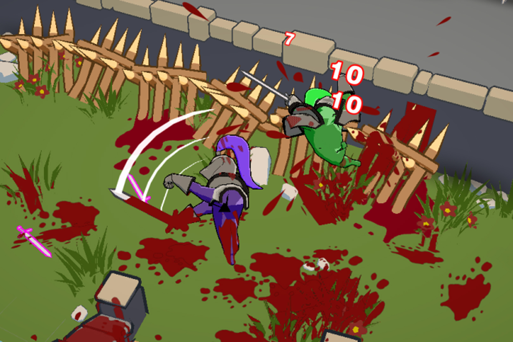
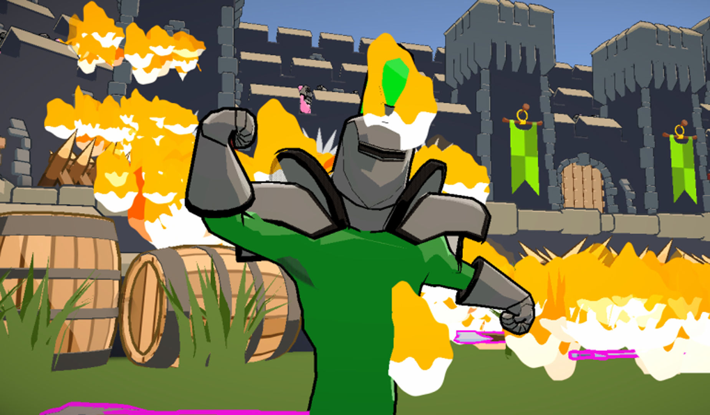
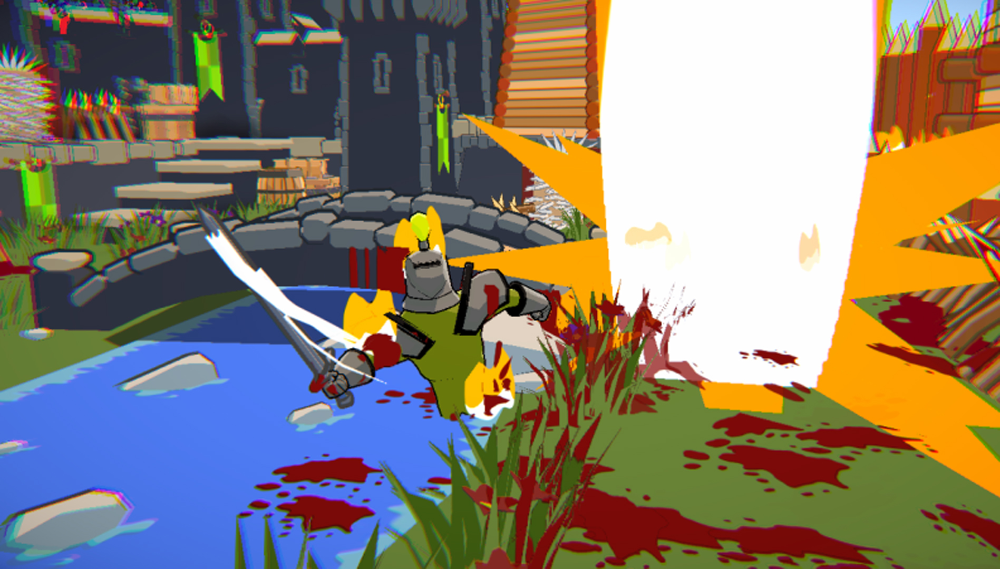
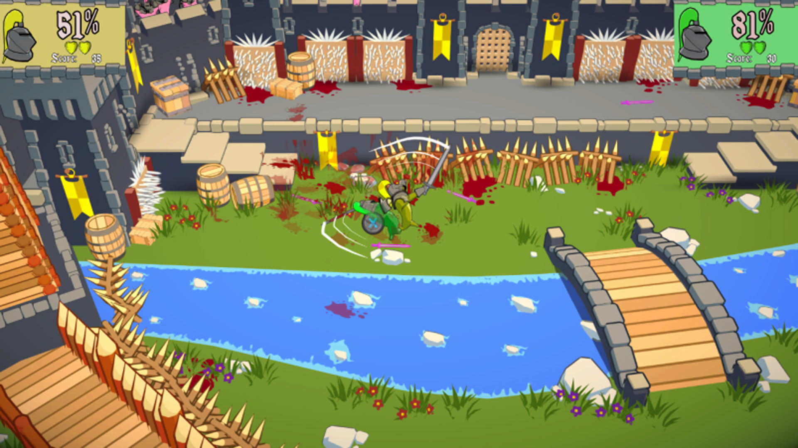

Medieval Madness
Ragdoll based party arena fighter. Swing around and find out!

About
This project was my first step into true game development. It was a group project, we had programmers and artists and we had to make a vertical slice of a game.
I quickly noticed we did not have someone taking initiative. So I explicitly stated so and suggested to take upon the 'leader' role. Later, team members thanked me for this as they believed the project would not have come this far and be so good if I didn't do this.
What I concretely is that I delegated tasks, checked in how their progress was and reminding them when their tasks were due. I mainly pushed the game design forward and made final decisions if we were out of time and had 2 camps of opinion. Although it sounds like I was an authoritative leader, I did my best to make sure we heard everyone's opinion and input. Making sure that people could find themselves and not hold any grudges when we would move forward.
Besides team dynamics and game design, I developed everything related to weapons, gamemodes and modifiers. Did a chunk of the UI-, polish- and audio implementation. Things I did not touch were the ragdolls and character controller as my fellow programmer did all research related to it and knew how it all worked. If there was more time I would've liked to be included and explained how it all worked, but as this was a school project and time was quite limited (hard limit of 10 hours each week) we had to work with the constraints given.
Screenshots



